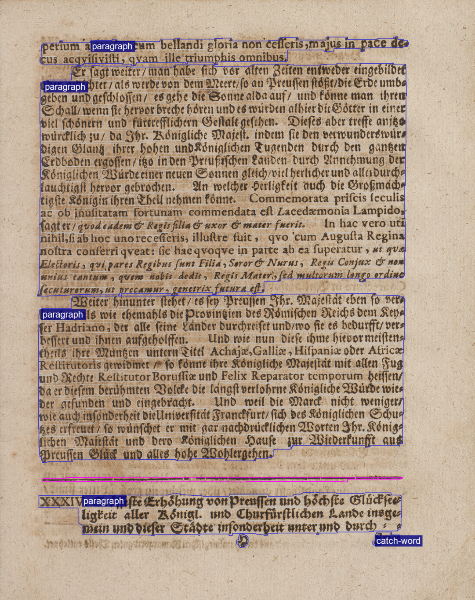

Language
The language can be specified at the following layers, which are represented by corresponding elements.
| Layer | Element | Attributes |
|---|---|---|
| Page | Page | @primaryLanguage and @secondaryLanguage |
| Region | TextRegion | @primaryLanguage and @secondaryLanguage |
| Line | TextLine | @primaryLanguage |
| Word | Word | @language |
A distinction is made between the language, primary language (first or main language) and secondary language (second or secondary language). Language, primary language and secondary language are attributes (see table).
The values of the attributes are given by the PAGE XML schema. They correspond to ISO 639 for the identification of languages. Not an abbreviation is given, rather the language designation standardized by ISO.
Remember: Because the language specifications are possible on different layers,
the following rule applies, subordinate layers have priority over the specification
of
the higher layers.
Page
<Page primaryLanguage="German" secondaryLanguage="Latin">Figure 1. Example page with two languages. nn_auszug_1701_061.xml Remember: On this page only two languages are used, for this reason the primary and secondary language (@primaryLanguage, @secondaryLanguage) can be specified.<Page primaryLanguage="German">Figure 2. Example page with four languages. zesen_assenat_1670_0382.xml  Remember: Four languages (German, Latin, Greek, Hebrew) are used on this page. The main language is German, it is indicated. The other languages are specified at the word layer. If word segmentation is not available, it is recommended to specify the language in the METS dataset (GT-labelling).
Remember: Four languages (German, Latin, Greek, Hebrew) are used on this page. The main language is German, it is indicated. The other languages are specified at the word layer. If word segmentation is not available, it is recommended to specify the language in the METS dataset (GT-labelling).
TextRegion : Region
<TextRegion primaryLanguage="Latin">Figure 3. TextRegion with one language . nn_auszug_1701_061.xml 
<TextRegion primaryLanguage="German" secondaryLanguage="Latin">Figure 4. TextRegion with two languages. nn_auszug_1701_061.xml 
TextLine : Line
<TextLine primaryLanguage="Latin">Figure 5. TextLine with one language. nn_auszug_1701_061.xml 
<TextLine primaryLanguage="Latin">Figure 6. TextLine with two languages. nn_auszug_1701_061.xml  Remember: In the example it can be seen that both German language and Latin language words are present in the line. Only the main language @primaryLanguage is specified. The specification of a @secondaryLanguage is not possible.
Remember: In the example it can be seen that both German language and Latin language words are present in the line. Only the main language @primaryLanguage is specified. The specification of a @secondaryLanguage is not possible.
Word
<Word language="Latin">